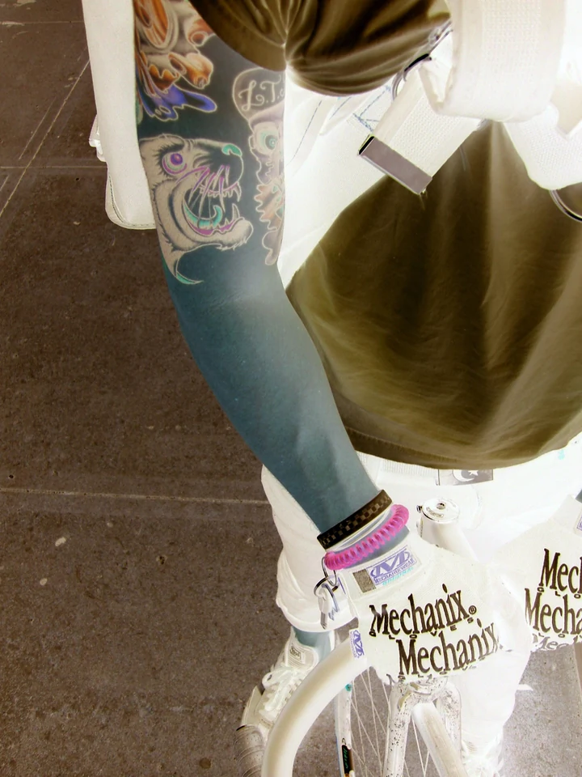
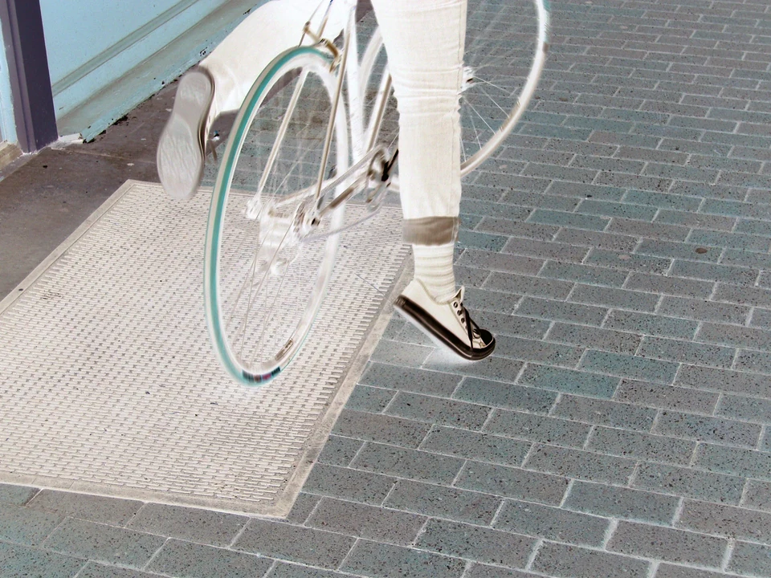
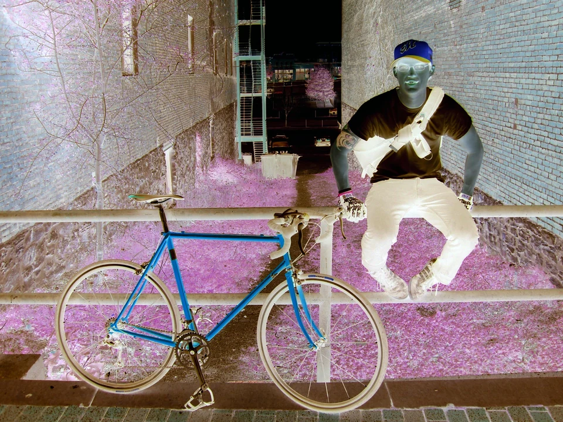
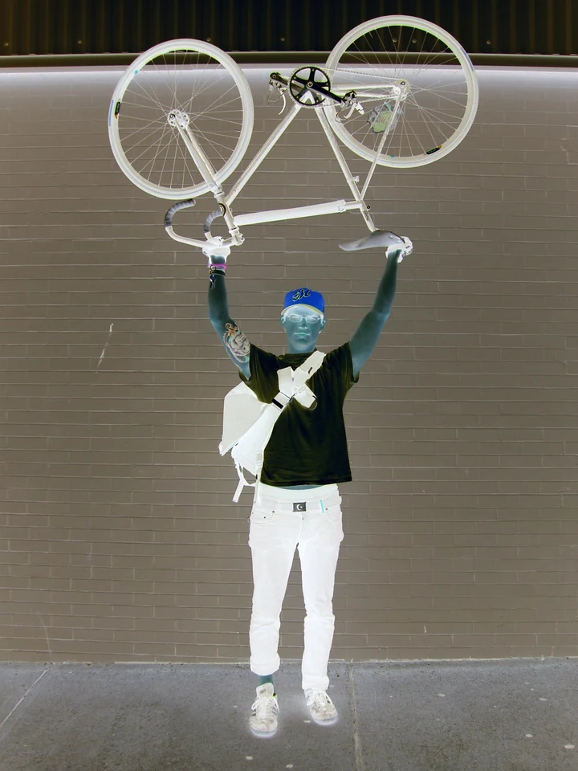

CF—PH—001 / 2007
Bicycle, 2007
A familiar body. An unfamiliar surface.
A short sequence of inverted street photographs: tattooed skin, gloves, wheels, pavement, and a bicycle lifted into the air. Close crops withhold the scene before the wider views return it.







